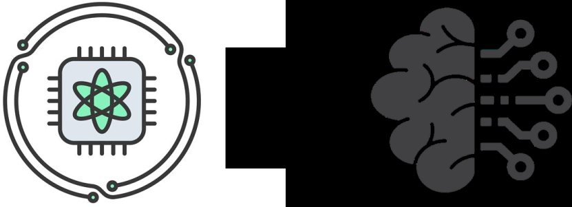

Quantum Machine Learning Tutorial

- Paper: Quantum Machine Learning: A Hands-on Tutorial for Machine Learning Practitioners and Researchers
- Authors: Yuxuan Du1, Xinbiao Wang1, Naixu Guo2, Zhan Yu2, Yang Qian1, Kaining Zhang1, Min-Hsiu Hsieh3, Patrick Rebentrost2, Dacheng Tao1
- Institutions: 1College of Computing and Data Science, Nanyang Technological University, Singapore; 2Centre for Quantum Technologies, National University of Singapore, Singapore; 3Hon Hai Research Institute, Taipei, Taiwan
Overview
This tutorial intends to introduce readers with a background in AI to quantum machine learning (QML) – a rapidly evolving field that seeks to leverage the power of quantum computers to reshape the landscape of machine learning. For self-consistency, this tutorial covers:
- Foundational principles
- Representative QML algorithms
- Potential applications
- Learning theory and computational complexity
- Practical code demonstrations
Whether you are an AI researcher, a machine learning practitioner, or a computer science student, this resource will equip you with a solid foundation in the principles and techniques of QML. By bridging the gap between classical ML and quantum computing, this tutorial could serve as a useful resource for those looking to engage with quantum machine learning and explore the forefront of AI in the quantum era.
Organization
- Chapter1: Brief introduction of QML.
- Chapter2: Basics of quantum computing.
- From classical bits to quantum bits
- From digital logical circuit to quantum circuit model
- Quantum read-in and read-out protocols
- Quantum linear algebra
- Chapter3: Quantum kernel methods.
- Classical kernel machines
- Quantum kernel machines
- Theoretical foundations of quantum kernel machines
- Chapter4: Quantum neural networks.
- Classical neural networks
- Fault-tolerant quantum perceptron
- Near-term quantum neural networks
- Theoretical foundations of quantum neural networks
- Chapter5: Quantum transformer
- Classical transformer
- Fault-tolerant quantum transformer
- Code Examples:
- Implementations of different quantum data encodings
- SVM with quantum kernel for classification on MNIST datatset
- Quantum classifier for the Wine dataset
- Quantum GAN
- Transformer
To provide a clear and comprehensive learning experience, each chapter is composed of the following parts:
-
Classical foundations and quantum model construction. Each chapter begins with a review of the classical version of the model, ensuring that readers are well-acquainted with the foundational concepts before exploring their quantum adaptations. After this review, we introduce quantum versions of the models, focusing on implementations based on NISQ, FTQC, or both.
-
Theoretical analysis. There is nothing more practical than a good theory. In this tutorial, each chapter provides a theoretical analysis of the learnability of QML models, focusing on key aspects such as expressivity, trainability, and generalization capabilities. To ensure a balance between depth and self-consistency, this tutorial provides proof for the most significant theoretical results, as highlighted by Theorems and Lemmas. For results that are less central to the main content of this tutorial, we present them as Facts and include appropriate references, allowing readers to easily locate the complete proofs if desired.
-
Frontier topics and future directions. Each chapter concludes with an exploration of cutting-edge topics and emerging challenges in the field. This part highlights open research problems, ongoing developments, and potential future directions for the quantum versions of each model, providing insights into where the field may be headed.
Citation
If you found this tutorial helpful, please consider citing the following reference:
@article{du2025quantum,
title={Quantum Machine Learning: A Hands-on Tutorial for Machine Learning Practitioners and Researchers},
author={Du, Yuxuan and Wang, Xinbiao and Guo, Naixu and Yu, Zhan and Qian, Yang and Zhang, Kaining and Hsieh, Min-Hsiu and Rebentrost, Patrick and Tao, Dacheng},
journal={arXiv preprint arXiv:2502.01146},
year={2025}
}